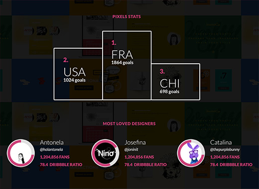

        <section class="portfolio center-text" id="portfolio">
         
                <ul class="projects-navigation">
                    <li><a href="#transbunko"><i class="fa fa-chevron-left"></i></a></li>
                    <li class="grid"><a href="portfolio.html"></a></li>
                    <li><a href="#mobilized"><i class="fa fa-chevron-right"></i></a></li>
                </ul>

            <h2 class="title-dark">Worldddcup</h2>
            <p class="text">UI/UX Design for WorldddCup, a Dribbble-related project created for FIFA's Brazil World Cup 2014.</p>
            <div class="project-list">
                
                    
                    
                    
                    
                    
                                      
            </div>
            <ul class="projects-navigation">
                <li><a href="#transbunko"><i class="fa fa-chevron-left"></i></a></li>
                <li class="grid"><a href="portfolio.html"></a></li>
                <li><a href="#mobilized"><i class="fa fa-chevron-right"></i></a></li>
            </ul>
        </section>
      